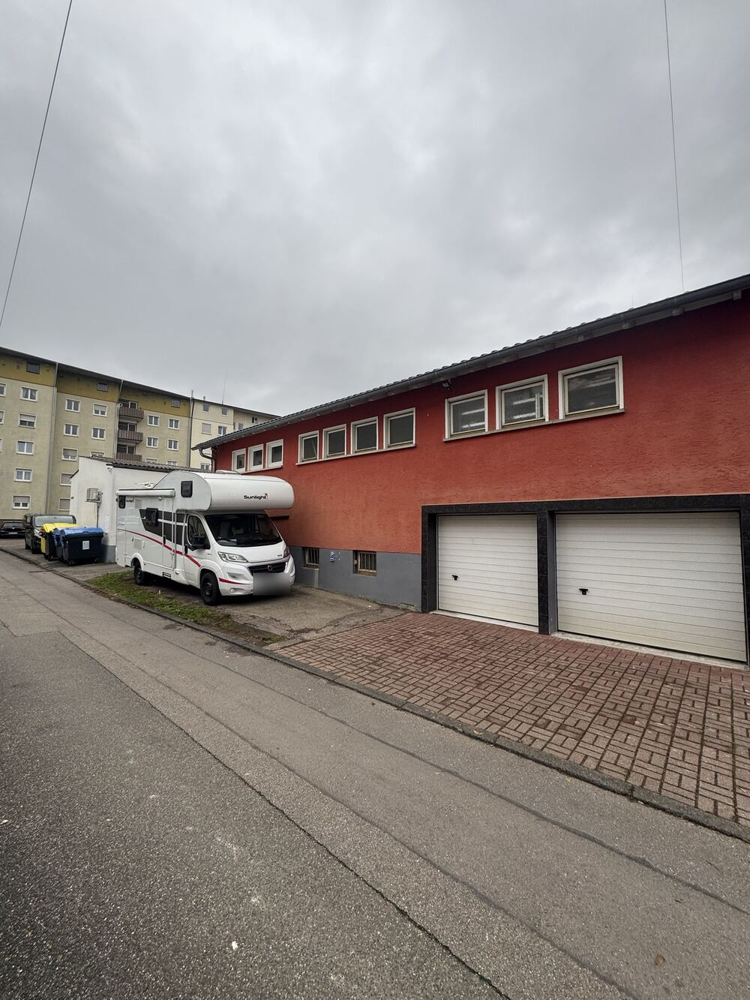
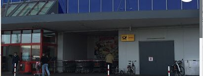
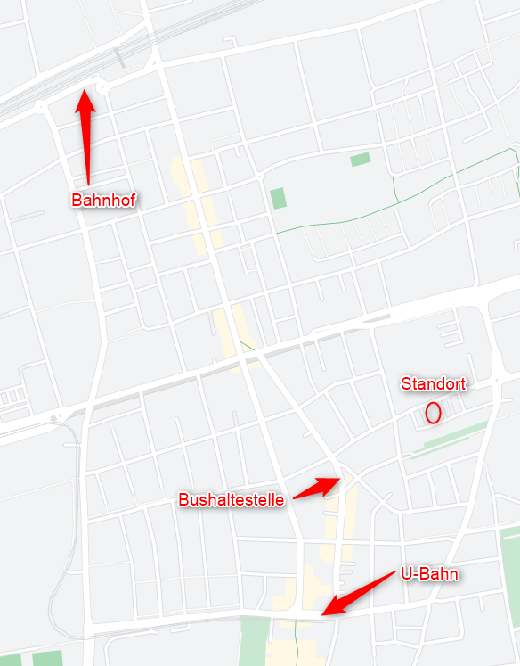

Cítíte se prosím jako doma! Chceme, abyste se u nás měli skvěle, a proto jsme zde shromáždili nejdůležitější informace. S dotazy nebo podněty se na nás kdykoli obraťte – užijte si Fellbach!
Anita & Johannes
📄 PDF průvodce (anglicky)Příjezd & check-in
Apartmán se nachází v zadním domě (Bruckstraße 22/1). K příjezdu, parkovacímu místu a vchodu se dostanete zezadu přes ulici Bruckwiesenweg – ne z Bruckstraße.
📍 Cíl navigace: BruckwiesenwegJak k nám
- Jeďte po Bruckstraße a na rohu s červeným domem (restaurace Da Patrizia) odbočte do ulice Bruckwiesenweg.
- Pokračujte po Bruckwiesenweg, dokud se nestočí doleva. Za zatáčkou uvidíte vlevo červenou budovu se dvěma bílými garážovými vraty (foto 1).
- Vpravo od garáží je kovová brána se stříškou (foto 2). Parkování: zaparkujte na dlážděné ploše před levými vraty dvojgaráže (vedle obytného vozu) – tato vrata smíte úplně zablokovat. Pravá garážová vrata musí zůstat vždy volná.
- Kovová brána je otevřená – jednoduše projděte. Dále pokračujte pěšky po dlážděném chodníku podél bílého domu, kolem vyvýšených záhonů, až k bílým vchodovým dveřím se schody a skleněnou stříškou (foto 3 & 4).
- Klávesnice Yale je vpravo nahoře na vchodových dveřích (foto 5): dotkněte se klávesnice, aby se rozsvítila → zadejte svůj osobní kód → potvrďte zeleným ✓ → stiskněte kliku. Kód najdete v aplikaci Airbnb u své cesty (pokyny k příjezdu); platí jen po dobu vaší rezervace.
- Přímo v chodbě jsou dveře s cedulkou „Air BnB“ – to je váš apartmán (foto 6). Při příjezdu je klíč v zámku.


Cesta na fotografiích



Pohled shora


Autobusem & vlakem: viz doprava. Autobusová zastávka Cannstatter Platz je jen pár minut chůze.
Wi-Fi
Apartmán & domovní řád
- V celém apartmánu je zákaz kouření.
- Žádné večírky ani akce.
- Noční klid od 22 do 7 hodin – prosíme o ohleduplnost i na dvoře a cestou k autu.
Dobré vědět
- Topení & větrání: radiátory nastavíte termostatem (stupeň 3 ≈ 20 °C). V zimě prosím větrejte krátce, ale intenzivně (okno dokořán na 5 minut), místo aby bylo trvale vyklopené.
- Káva: na ranní kávu je připraven kávovar Senseo. Obvykle vám necháme pár polštářků na začátek – při delším pobytu si nejlépe kupte balení při nákupu (seženete v každém supermarketu).
- Odpad: odpad můžete při odjezdu jednoduše nechat v apartmánu – postaráme se o něj.
- V neděli mají v Německu všechny supermarkety zavřeno – nakupte nejlépe v sobotu.
Nákupy, pekárny & jídlo
★ = hodnocení Google (počet recenzí) z našeho průzkumu – aktuální hodnocení a otevírací dobu najdete pod „Mapa“. Vzdálenosti od apartmánu.
Supermarkety & drogerie





Pekárny


Jídlo & pití


Naše tipy – přímo pro vás
Pro rodiny
Jedna z nejkrásnějších zoologických zahrad v Německu s mnoha pavilony a skleníky – skvělý výlet i v zimě nebo za deště.
Krytý bazén se skluzavkami, saunou a novým světem džungle pro nejmenší (otevřen v létě 2026). Venkovní koupaliště je v zimě zavřené.
Rovinatý bezbariérový okruh (cca 4 km) vinicemi – snadno s kočárkem, s výhledem na Fellbach.
130 let historie automobilu na devíti podlažích – napínavé i pro děti a ideální za deštivého dne.
Bull Burgerhouse (★ 4,6) je asi 50 m daleko, Trattoria Pane e Pino (★ 4,7) asi 150 m.
Pro páry
Vinná stezka (cca 4,3 km) začíná u Neue Kelter fellbašských vinařů (Kappelbergstraße 48) a vede vinicemi k vyhlídce „Blick über Fellbach“. Každou první sobotu v měsíci se tam koná veřejná degustace.
Klasicistní kaple nad vinicemi nabízí jeden z nejkrásnějších výhledů do údolí Neckaru. Samotná kaple je od listopadu do března zavřená – procházka a výhled se ale vyplatí po celý rok.
Teplá minerální voda ve vnitřních i venkovních bazénech a sauna – nádherně relaxační, zejména v zimě.
Trattoria Pane e Pino (★ 4,7), Irodion (★ 4,6, řecká, nově v historické Alte Kelter) nebo pohodlně hned vedle v Da Patrizia (★ 4,5).
Esslingen s hrázděným starým městem a hradem (cca 20 min) nebo rezidenční zámek Ludwigsburg, jeden z největších barokních zámků Německa (cca 25 min, v zimě s prohlídkami).
Pro cestovatele sólo & služebně
Z nádraží Fellbach jedete linkou S2 nebo S3 asi 12–15 minut na hlavní nádraží ve Stuttgartu – Schlossplatz, Königstraße, tržnice a Staatsgalerie jsou pak na dosah pěšky.
Dvě povinné zastávky pro milovníky aut, každé zvládnete za 2–3 hodiny. Obě jsou v pondělí zavřená; Muzeum Porsche je navíc od 18. 1. do 1. 2. 2027 zavřené kvůli rekonstrukci.
První televizní věž na světě ze železobetonu – skvělá i po práci: denně 10–22, poslední vstup 21:30.
Okruh přes Kappelberg vinicemi a lesem k rozhledně – cca 13,7 km, asi 4 hodiny. V zimě vyrazte brzy (kolem 17 h je tma) a pozor na náledí v lese.
Maultaschen a Kässpätzle ve Wirthshaus Zum Kuckuck (★ 4,4, 747 recenzí) – útulné, i když jdete sami.
Akce ve Fellbachu & okolí
Stav k 22. 11. 2026 · bez záruky – před návštěvou si prosím ověřte u pořadatele.
- 28. 11.–22. 12. 2026Vánoční trh ve Fellbachu
Kolem Lutherkirche a radnice, s pódiem a programem pro děti. Po–st 16–20, čt–ne 12–20, vstup zdarma (konec předpokládán 22. 12.).Centrum Fellbachu - 25. 11.–23. 12. 2026Vánoční trh ve Stuttgartu
Jeden z nejstarších a největších vánočních trhů v Evropě, asi 250 stánků. Ne–čt 11–21, pá & so 11–22.Centrum Stuttgartu · cca 15 min S-Bahnem - 24. 11.–22. 12. 2026Středověký & vánoční trh v Esslingenu
Ne–čt 11–20:30, pá & so 11–21:30.Esslingen am Neckar · cca 20 min - 24. 11.–22. 12. 2026Barokní vánoční trh v Ludwigsburgu
Asi 150 stánků v barokní kulise, denně 11–21.Ludwigsburg · cca 25 min - do začátku/poloviny ledna 2027Christmas Garden ve Wilhelmě
Světelná stezka historickým parkem, večer. Vstupenky online (christmas-garden.de).Stuttgart-Bad Cannstatt - každou 1. sobotuVeřejná degustace – Fellbacher Weingärtner
Další termíny: 5. 12. 2026, 2. 1., 6. 2. a 6. 3. 2027.Neue Kelter, Kappelbergstraße 48, Fellbach - 20. 1. 2027 · 20:00„Huckleberry Finn“ s Herbertem Knaupem (v němčině)Schwabenlandhalle Fellbach
- 7. 2. 2027 · 19:00Labutí jezero – Grand Classic BalletSchwabenlandhalle Fellbach
- 20.–21. 2. 202729. vinařský veletrh „Die Besten aus dem Remstal“
Asi 50 vinařství během jednoho víkendu.Alte Kelter, Kelterweg 7, Fellbach - 13. 3. 2027 · 20:00Azzurro – italo-popová revueSchwabenlandhalle Fellbach
- 20. 3. 2027Bobby & Max – živá rozhlasová hra pro děti, v němčině (13:00 & 18:00)Schwabenlandhalle Fellbach
Autobusem & vlakem
- Autobus: zastávka Fellbach Cannstatter Platz (pár minut pěšky) – autobusy mj. na nádraží.
- S-Bahn: nádraží Fellbach – S2 a S3 na hlavní nádraží Stuttgart (cca 12–15 min), letiště/výstaviště a směr Schorndorf nebo Backnang. Nejpohodlnější spojení do Stuttgartu.
- Tramvaj U1: kvůli stavbě končí U1 od 13. 12. 2026 na zastávce Fellbach Schwabenlandhalle. Pravděpodobně od března do července 2027 budou místo U1 jezdit náhradní autobusy do Bad Cannstattu.
Jízdní řády a jízdenky: aplikace VVS nebo DB Navigator – ukazují i aktuální výluky. Deutschlandticket platí v celé regionální dopravě.
🚗 Stuttgart je nízkoemisní zóna: auta potřebují zelenou plaketu („Umweltplakette“).
Vyhledání spojení VVS ↗
Odjezd
Check-out do 11:00. Před odchodem prosím:
Doufáme, že se vám u nás líbilo! Velmi nás potěší vaše hodnocení na Airbnb. ⭐
Kontakt & nouzové situace
Nejrychleji nás zastihnete přes aplikaci Airbnb nebo telefonicky:
Tísňová čísla
- Hasiči & záchranná služba: 112
- Policie: 110
- Lékařská pohotovost: 116 117
- Pohotovostní lékárna: aponet.de – vyhledání lékárny